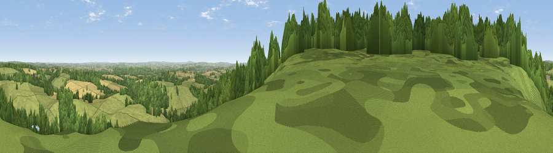

Viewpoint near Willey
#11692 in England · top 28% of its area beats it · near WilleyWhere it is
The exact computed spot (SO 66775 97925). Click the marker for map links.
The view, rendered

A 360° render of this exact spot computed from the terrain model, tree cover and land cover — summer colours, afternoon light, calibrated against photographs of famous viewpoints. Real trees, hedges and buildings will differ in detail.
The panorama
Grey silhouette: terrain skyline in each direction (720 bearings, Earth curvature and refraction included). Dashed green: skyline with trees (+15 m) and buildings (+8 m) as obstacles. Blue strip: how far the ground is visible on each bearing.
Where the view opens
Wedge length = distance to the farthest visible ground on that bearing (vegetation-aware). Rings at 10, 25 and 50 km.
What fills the view
52% woodland · 37% grassland · 9% cropland · 1% water ·
Angular shares of the visible panorama (visual magnitude), not map area. Landscape diversity 0.44 (0–1 Shannon).
Key numbers
More beautiful places nearby
The staircase of upgrades: each row has a higher view potential than everything closer. Driving times are estimates from straight-line distance, calibrated against real road routing — check an actual route before setting out.
| Place | Direction | Drive | Score |
|---|---|---|---|
| Viewpoint near Much Wenlock | NW · 4 km | ~9 min | 69.2 |
| Viewpoint near Homer | WNW · 6 km | ~13 min | 74.5 |
| Viewpoint near Harley | WNW · 7 km | ~14 min | 79.9 |
| Viewpoint near Little Wenlock | NNW · 11 km | ~21 min | 86.6 |
| North Hill | SSE · 53 km | ~74 min | 86.8 |
| Worcestershire Beacon | S · 54 km | ~75 min | 87.1 |
| Viewpoint near West Quantoxhead | SSW · 165 km | ~186 min | 87.9 |
| Viewpoint near West Quantoxhead | SSW · 165 km | ~187 min | 88.7 |
52.57812, -2.49173 · source: screening · position refined by local search. Computed location — check access rights before visiting.